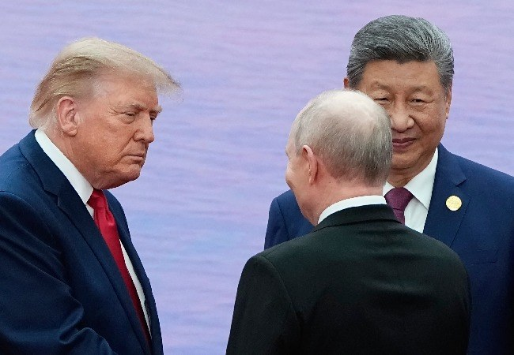

Xi, Trump, Putin Exchange Greetings Before Historic China Summit

Xi Jinping, Donald Trump and Vladimir Putin exchanged greetings in Shenzhen on Wednesday, ahead of their first formal trilateral summit, scheduled for the following day. The meeting’s agenda remained uncertain, and Kremlin spokesman Dmitry Peskov said it would last no more than an hour.
Xi welcomed Trump as he arrived, meeting him at the foot of his plane’s stairs. The welcome included the two countries’ national anthems, fighter jets overhead and a red-carpet procession. The leaders later joined other attendees of the broader Asia-Pacific Economic Cooperation summit at a dinner, where they greeted one another before a group photograph. Xi said he hoped to discuss China-US relations, Asia-Pacific cooperation and global issues with Trump.
Washington had indicated that the war in Ukraine was not expected to be discussed at the three-way meeting, but Trump later said it would be. US officials also expected discussions of the war in Iran and nuclear disarmament. A US-Russia treaty on nuclear weapons expired in February; Beijing has said the United States and Russia should reduce their much larger arsenals before China enters talks about its own.
Putin said the summit could be “highly useful” and called for dialogue amid rising military and political risks. Earlier, he said Western sanctions imposed after Russia’s 2022 invasion of Ukraine had failed. Canadian Prime Minister Mark Carney, also in Shenzhen, said sanctions would continue to increase while the war continued. Ukraine’s foreign minister, Andriy Sybiga, said he hoped Xi and Trump would press Russia to end it. Putin and Xi also met separately, with Xi urging closer ties between their countries.
Source: Channels TV